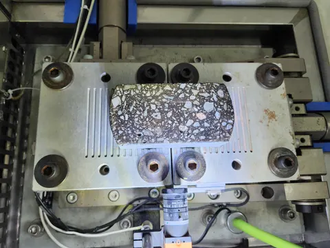

Godeok Topyeong Bridge pavement evaluation
Commissioned by Hyundai Engineering & Construction
Research organization: Korean Society of Civil Engineers
Performed TxDOT Overlay tests on three mastic asphalt mixture types: TLA-based, polymer-modified, and polymer-modified mixtures for ultra-thin layers.
Analyzed load–cycle data and test-stage photographs; documented crack progression in a technical report. Tested pre-prepared latex-modified concrete (LMC) specimens.
Methods, contribution & evidence